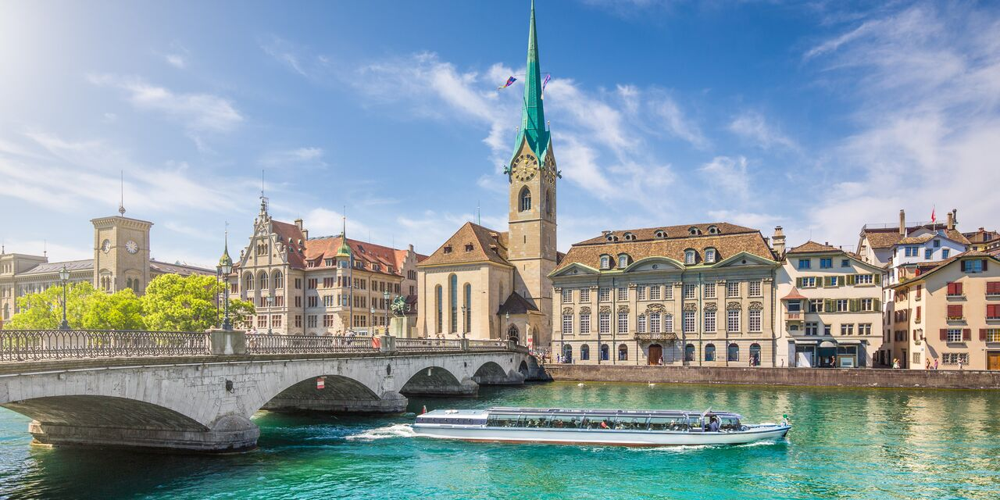
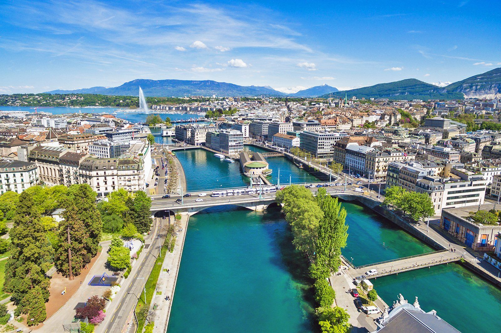
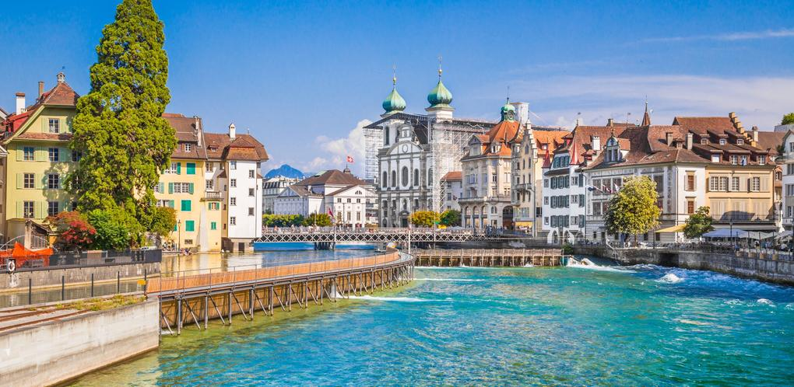
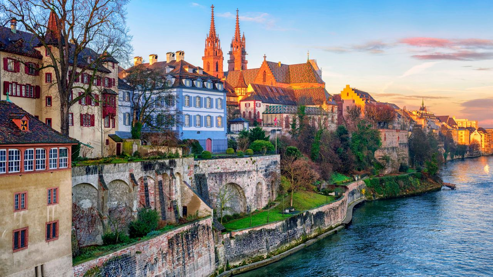
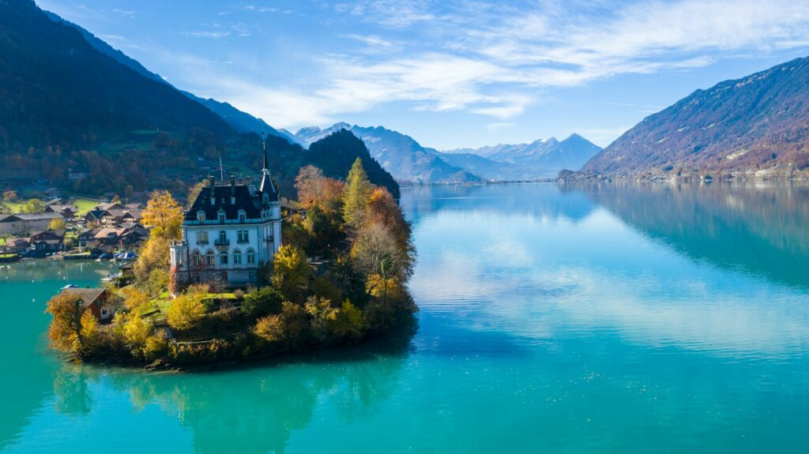
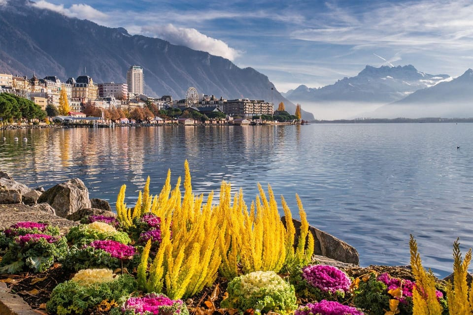
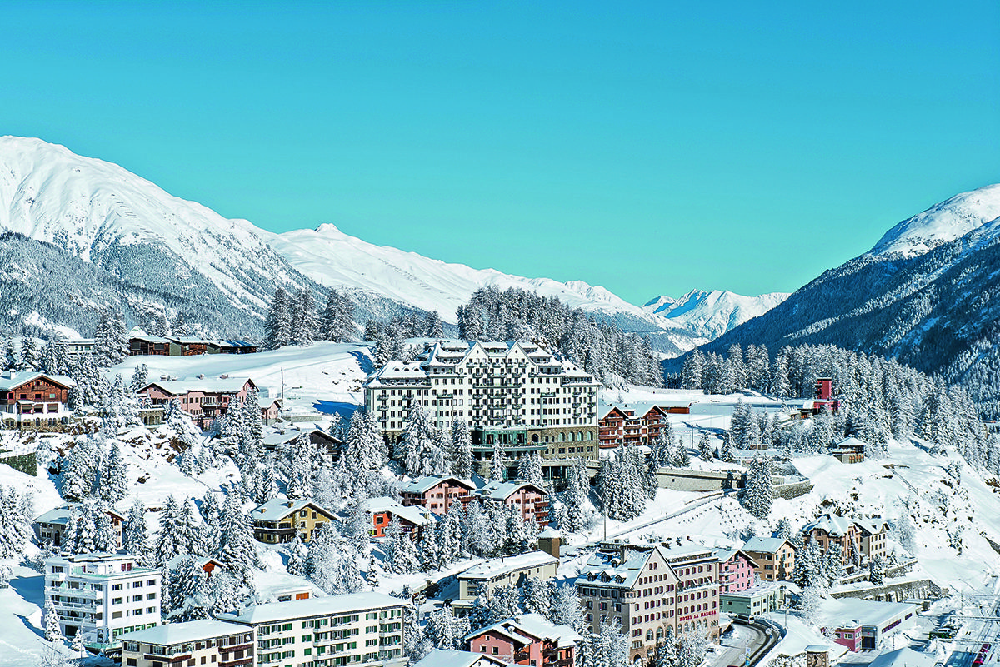

Zurich: Finance and Modern Culture

As Switzerland's largest city and financial capital, Zurich offers a vibrant mix of high-end shopping along the Bahnhofstrasse and rich history in its Old Town (Niederdorf). It sits beautifully on Lake Zurich, offering summer swimming and winter markets.
- Don't Miss: Sailing on Lake Zurich and visiting the Grossmünster church.
- Culture: Home to numerous galleries and the world-renowned Swiss National Museum.
Geneva: International Diplomacy and Peace

Geneva is the global center for diplomacy, hosting the European headquarters of the UN and the Red Cross. The city's landmark is the spectacular Jet d'Eau fountain on Lake Geneva. It has a distinctly French flavor due to its location in Romandy.
- Key Visits: The Palais des Nations (UN) and the International Red Cross and Red Crescent Museum.
- Historic Center: Climb to the top of St. Pierre Cathedral for panoramic views.
Lucerne: Medieval Charm and Lake Beauty

Nestled among stunning mountain and lake scenery, Lucerne is famous for its preserved medieval architecture. The main attraction is the Kapellbrücke (Chapel Bridge), Europe's oldest wooden covered bridge, and the surrounding colorful frescoes of the Old Town.
- Day Trip Hub: Gateway to mountain excursions like Mount Pilatus, Rigi, and Titlis.
- Landmark: The somber Lion Monument (Löwendenkmal).
Bern: The Capital and UNESCO Old City

Bern, the federal capital, is uniquely characterized by its medieval Old City, a UNESCO World Heritage site, situated on a dramatic bend in the Aare River. It is known for its arcades (Lauben) and the famous Zytglogge, a medieval clock tower with an elaborate astronomical display.
- Political Center: Visit the Swiss Parliament building (Bundeshaus).
- Local Icon: The Bear Park (BärenPark), housing the city's heraldic animal.
Basel: Art and History Hub

Located on the Rhine near the borders of France and Germany, Basel is a cultural powerhouse with over 40 museums. The city is known for its vibrant contemporary art scene, historic cathedral (Münster), and the famous Art Basel contemporary art fair held annually.
- Art Scene: The Kunstmuseum and numerous galleries showcase Swiss and international contemporary work.
- Local Experience: Stroll the Rhine waterfront and explore the charming Altstadt (Old City).
Interlaken: Adventure Gateway

Situated between Lake Thun and Lake Brienz with breathtaking views of the Jungfrau, Eiger, and Mönch peaks, Interlaken is the adventure capital of Switzerland. It's the launching point for hiking, paragliding, canyoning, and mountain train excursions.
- Summer Activities: Hiking, mountain biking, and water sports on pristine lakes.
- Mountain Access: Gateway to Jungfrau, Schilthorn, and Harder Kulm viewpoints.
Montreux: The Pearl of the Swiss Riviera

Perched on the shores of Lake Geneva with stunning Alpine backdrop, Montreux is an elegant lakeside resort town famous for its Montreux Jazz Festival (held each July). The picturesque promenade and Belle Époque architecture evoke timeless elegance.
- Summer Festival: The world-renowned Montreux Jazz Festival hosts international artists.
- Historic Charm: Chillon Castle and terraced vineyards of Lavaux UNESCO site nearby.
St. Moritz: Luxury Alpine Resort

Set at 1,856 meters elevation in the Engadin Valley, St. Moritz is a legendary winter and summer mountain resort. It has hosted two Winter Olympic Games and is synonymous with luxury ski holidays and upscale mountain culture.
- Winter Sports: World-class skiing and Olympic-legacy facilities.
- Summer Activities: Alpine hiking, lake sports, and spa relaxation at thermal resorts.
City Travel Tips
Public Transport: All Swiss cities have excellent train, tram, and bus networks. The Swiss Travel Pass provides unlimited transport across the entire country.
Accommodation: Swiss cities offer luxury hotels, mid-range options, and budget-friendly hostels. Book in advance during peak season (June–September and December–February).
Language: German-speaking cities (Zurich, Bern, Basel), French-speaking (Geneva, Montreux), and Italian-speaking areas (Ticino). English is widely spoken in tourist areas and hotels.
Best Time to Visit: Spring and autumn offer mild weather and fewer crowds. Winter brings festive Christmas markets and skiing. Summer is peak season with warm weather and outdoor festivals.